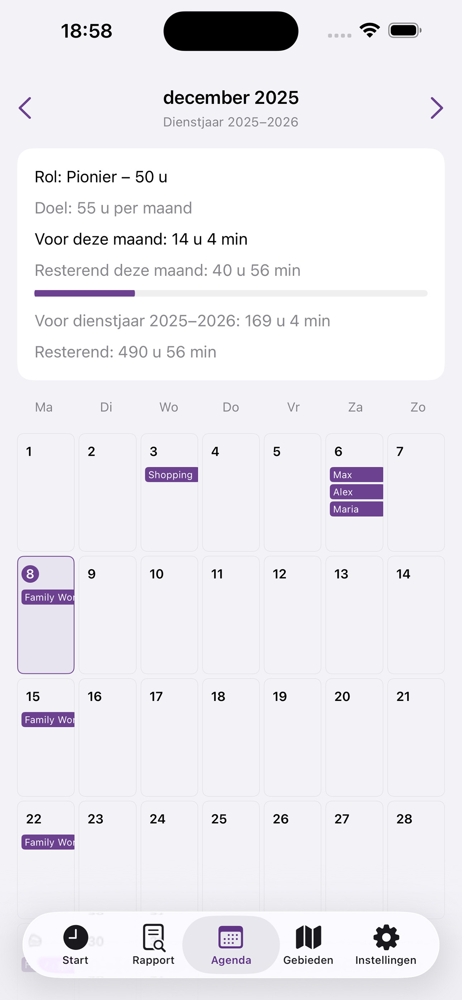
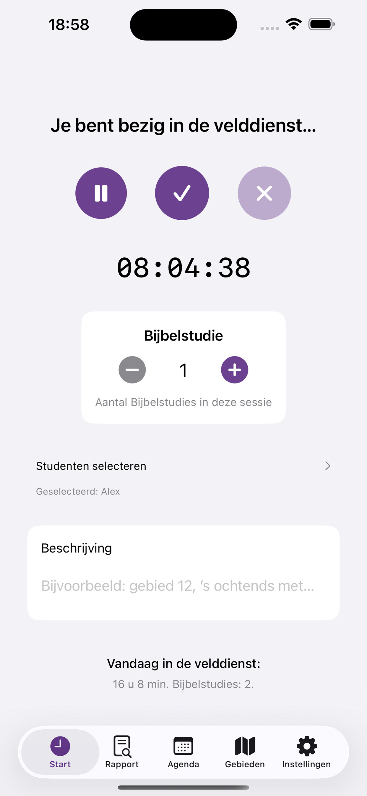
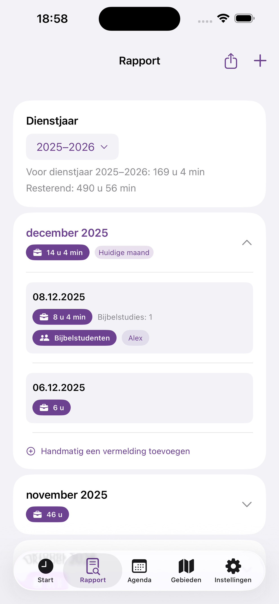
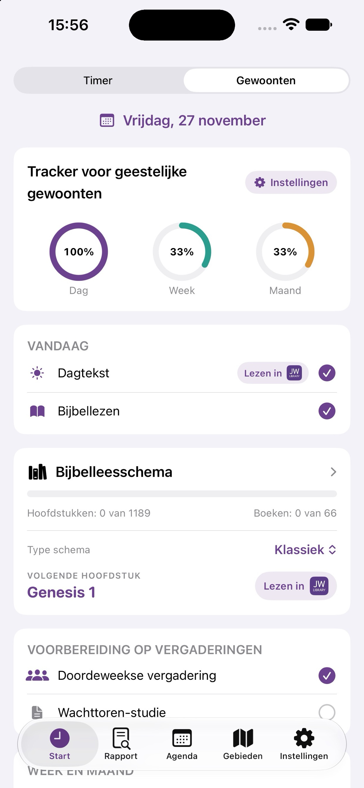
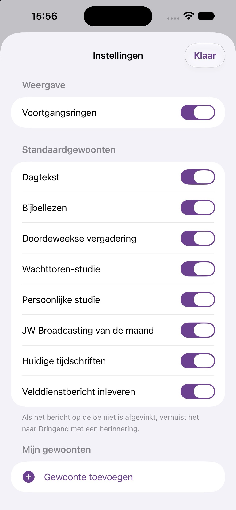
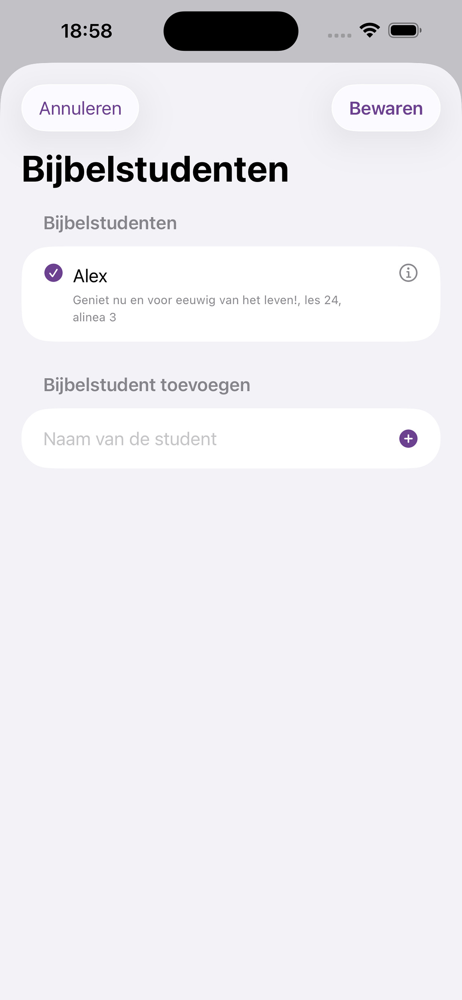
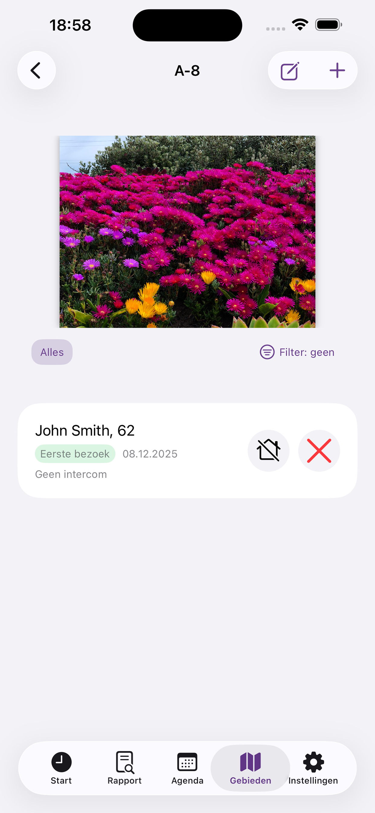
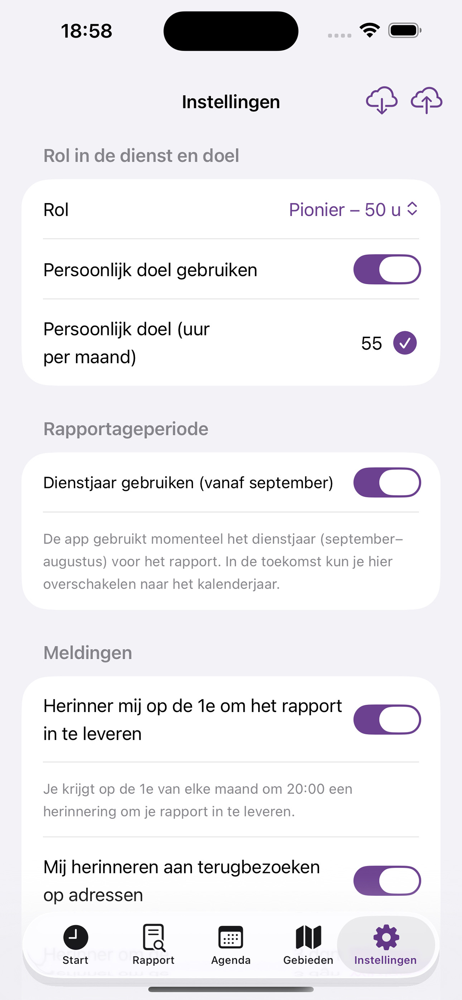
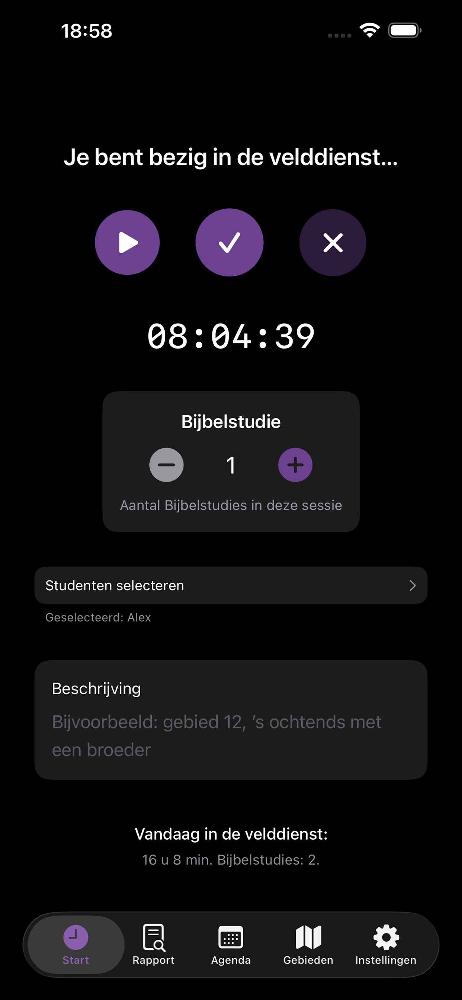
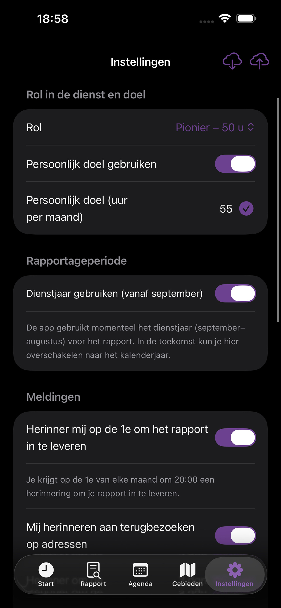

Velddienst, bericht, pioniersuren, gebied & Bijbelleesschema
Gratis, 100% privé-app voor Jehovah's Getuigen op iPhone en iPad: timer met widgets, maandrapport, pionierskalender, gebiedskaarten, nabezoeken, Bijbelstudies, geestelijke gewoonten en een Bijbelleesschema.




Bekijk elk scherm van JW Ministry
Echte schermafbeeldingen uit de App Store — van de velddiensttimer op het Dynamic Island tot gebiedskaarten en het dienstjaarrapport.









Alle hulpmiddelen voor een georganiseerde bediening
Speciaal ontworpen voor verkondigers, hulppioniers, gewone en speciale pioniers.
Velddiensttimer & Dynamic Island
Start de timer met één tik. Hij blijft nauwkeurig doorlopen op het toegangsscherm en het Dynamic Island, zelfs als je iPhone vergrendeld is of wordt herstart.
Pioniersdoelen op maat
Kies verkondiger, hulppionier (15 of 30 uur), gewone pionier (50 uur / 600 uur per jaar) of speciale pionier (90/100 uur) — of stel een eigen doel in.
Kalender met automatische urensom
Zie direct hoeveel uren je deze maand al hebt ingepland, vergelijk je planning met de werkelijke uren en zet een voltooide afspraak met één veeg om naar je rapport.
Gebiedskaarten & Appartementgenerator
Maak binnen enkele seconden een compleet flatgebouw aan op basis van verdiepingen en voordeuren. Voeg foto's van de gebiedskaart toe, kies uit 10 kleuren en zoek direct op adres of naam.
Bijbelstudies & Bezoekgeschiedenis
Houd elke student bij, noteer de huidige les en paragraaf en koppel bijbelstudies direct aan je velddienstrapport zonder dubbele telling.
100% Privé & Betrouwbare Back-ups
Geen accounts, geen externe servers en geen trackers. Al je gegevens blijven veilig op je iPhone en iPad, met volledige JSON-back-up (inclusief gebiedsfoto's) naar iCloud Drive.
Nieuw in versie 2.0.1
- Nieuwe sectie 'Geestelijke gewoonten' op het Start-tabblad: voortgangsringen (Dag / Week / Maand), eigen gewoonten, optie voor gezinsaanbidding en dringende herinnering op de 5e van de maand.
- Bijbelleesschema: 5 leesroutes, hoofdstukken afvinken in alle 66 boeken, verwachte einddatum en knop 'Lees in JW Library'.
- Dubbel doel in Kalender en widgets: bekijk zowel je pioniersnorm (bijv. 30 of 50 uur) als een extra persoonlijk maanddoel in een dubbele ring.
- Volledige aanpassing van de interface voor het opvouwbare iPhone Duo-scherm en iPadOS.
- Knoppen 'App delen' en 'Website' toegevoegd in Instellingen.
Waarom verkondigers en pioniers overstappen op JW Ministry
Vergelijking tussen een papieren notitieboekje, verouderde apps en JW Ministry 1.8
| Functie | Notitieboekje / Oude apps | JW Ministry 2.0.1 |
|---|---|---|
| Velddiensttimer op het toegangsscherm & Dynamic Island | Handmatig tellen of timer stopt op de achtergrond | Live Activities + widgets op het beginscherm |
| Controle van 15 / 30 / 50 uur & 600 uur voor het dienstjaar | Zelf uitrekenen met een rekenmachine | Dubbele voortgangsring (maand + dienstjaar Sept–Aug) |
| Kalender: som van geplande uren vs. werkelijke uren | Geen koppeling tussen agenda en rapport | Automatische som per maand + omzetten met één veeg |
| Huis-aan-huiskaarten & appartementgenerator | Papieren kaarten of handmatig elk huisnummer typen | Generator op verdiepingen, foto's, 10 kleuren & zoeken |
| Komend dienstjaar (2026–2027) vooruit plannen | Alleen de huidige maand beschikbaar | Volledige ondersteuning voor vorig, huidig en komend jaar |
| Privacy & gegevensbehoud bij overstap naar nieuwe iPhone | Risico op verlies van notities of verlopen cloud | 100% lokaal op het apparaat + volledige JSON-back-up in iCloud |
Ontwikkeld voor de velddienst en pioniersdienst van Jehovah's Getuigen
Alles wat je nodig hebt om je maandelijks velddienstrapport, pioniersschema, gebiedskaarten en bijbelstudies overzichtelijk bij te houden — naadloos naast JW Library.
Nauwkeurig velddienstrapport zonder rekenfouten
Of je nu als verkondiger rapporteert of als hulppionier (15 of 30 uur) of gewone pionier (50 uur per maand) dient: JW Ministry telt automatisch al je minuten, bijbelstudies en opmerkingen op en stuurt op de 1e van de maand om 20:00 uur een herinnering.
- Automatische berekening voor verkondiger en pionier (15, 30, 50, 100 uur)
- Volledig overzicht van het dienstjaar van september t/m augustus (600 uur)
- Slimme herinnering voor het inleveren van je rapport op de 1e om 20:00 uur
Slimme urenplanning voor gewone en hulppioniers
Plan je velddienstdagen vooruit in de ingebouwde kalender. De app berekent direct of je geplande uren voldoende zijn voor je maanddoel van 15, 30 of 50 uur en houdt je voortgang voor het hele dienstjaar (september–augustus) bij.
- Maandelijkse som van geplande uren direct zichtbaar boven de kalender
- Vergelijkingsbalk tussen geplande tijd en werkelijk gepredikte uren
- Zet een geplande afspraak met één veeg om in een rapportregistratie
Digitale gebiedskaarten en werken van huis tot huis
Vervang papieren briefjes door overzichtelijke digitale gebieden. Genereer een heel appartementencomplex in enkele seconden, markeer 'niet thuis'-adressen, bewaar foto's van de gebiedskaart en vind elk adres of elke naam direct terug via de zoekbalk.
- Automatische generator voor flatgebouwen per ingang en verdieping
- Zoeken door al je gebieden op straatnaam, huisnummer of naam van de bewoner
- Foto's van gebiedskaarten en 10 stijlvolle kleuraccenten per gebied
Modern en betrouwbaar alternatief voor ServicePlanner & MyTime
Veel oudere velddienst-apps worden niet meer bijgewerkt. JW Ministry is volledig gebouwd in native SwiftUI voor moderne iPhones en iPads, werkt 100% offline zonder reclame en werkt perfect samen met JW Library.
- Bijhouden van voortgang in het boek 'Gelukkig leven — nu en voor altijd!'
- Volledige JSON-back-up inclusief foto's voor veilige overstap naar een nieuwe iPhone
- 100% privé: geen registratie, geen servers en volledig gratis zonder advertenties
Geliefd bij verkondigers en pioniers wereldwijd
Beoordelingen uit de App Store van broeders en zusters die JW Ministry dagelijks in de velddienst gebruiken.
“Eindelijk een moderne en overzichtelijke app voor het pionieren! De automatische som van geplande uren in de kalender helpt mij elke maand om precies op koers te blijven voor mijn 50 uur.”
“De appartementgenerator bij de gebieden bespaart enorm veel tijd in de huis-aan-huisprediking, en de timer op het Dynamic Island werkt feilloos.”
“Ik ben overgestapt vanaf een oude app die niet meer werkte. De back-up via iCloud Drive en het overzicht van mijn bijbelstudies zijn precies wat ik zocht.”
Volledig vertaald in meer dan 35 talen
Klik op een taal hieronder om de schermafbeeldingen van de app direct in die taal te bekijken:
Steun de ontwikkeling van JW Ministry
De app is en blijft 100% gratis, zonder abonnementen en zonder advertenties. Als JW Ministry je helpt in de bediening, kun je de ontwikkelaar steunen voor de jaarlijkse Apple Developer-kosten en verdere updates.
Ondersteuning met betaalkaart
Snelle eenmalige of maandelijkse bijdrage via Boosty of Patreon vanaf elk apparaat:
Cryptocurrency (USDT / TON)
Directe overboeking zonder tussenpersonen. Klik om het adres te kopiëren of de QR-code te openen:
TQQxYhThQGngj887Lvq9TnKtyyYMcUDFNw

UQBNBroTUyMG0YqgiHGXwVKO_rKe5d2y7gXqvICREjBwuKYk

Veelgestelde vragen (FAQ)
Kan ik JW Ministry samen met JW Library gebruiken?
Ja, absoluut. JW Library is bedoeld voor het lezen van de Bijbel en publicaties, terwijl JW Ministry je persoonlijke hulpmiddel is voor je velddiensttimer, urenplanning, gebiedskaarten en maandrapport.
Zijn mijn gegevens, notities en gebieden veilig en privé?
100%. JW Ministry verzamelt geen persoonlijke gegevens en heeft geen eigen servers. Alles wordt uitsluitend lokaal op je iPhone of iPad opgeslagen en is alleen toegankelijk voor jou.
Hoe zet ik mijn gegevens over naar een nieuwe iPhone of iPad?
Open in de app het tabblad 'Instellingen' → 'Reservekopie' → 'Maak back-up' en sla het bestand op in iCloud Drive. Op je nieuwe apparaat kies je eenvoudig 'Herstel vanuit back-up' — al je uren, studies en gebiedsfoto's worden direct hersteld.
Ondersteunt de app de doelen van 15, 30, 50 en 600 uur?
Ja! In de instellingen kies je jouw toewijzing: verkondiger, hulppionier (15 of 30 uur), gewone pionier (50 uur per maand / 600 uur per dienstjaar) of speciale pionier, of je vult handmatig een eigen urendoel in.
Blijft de timer doorlopen als mijn telefoon vergrendeld is of herstart?
Ja. De timer maakt gebruik van systeemtijdstempels en iOS Live Activities op het toegangsscherm en Dynamic Island, zodat er nooit een minuut verloren gaat.
Hoe werkt het omzetten van een kalenderafspraak naar het rapport?
Veeg in de kalender een voltooide velddienstafspraak naar links en tik op 'Naar rapport'. De uren worden direct toegevoegd aan je maandrapport en verwijderd uit de resterende geplande uren.
Is JW Ministry echt helemaal gratis?
Ja, alle functies van de app zijn volledig gratis beschikbaar, zonder reclame en zonder betaalde abonnementen.